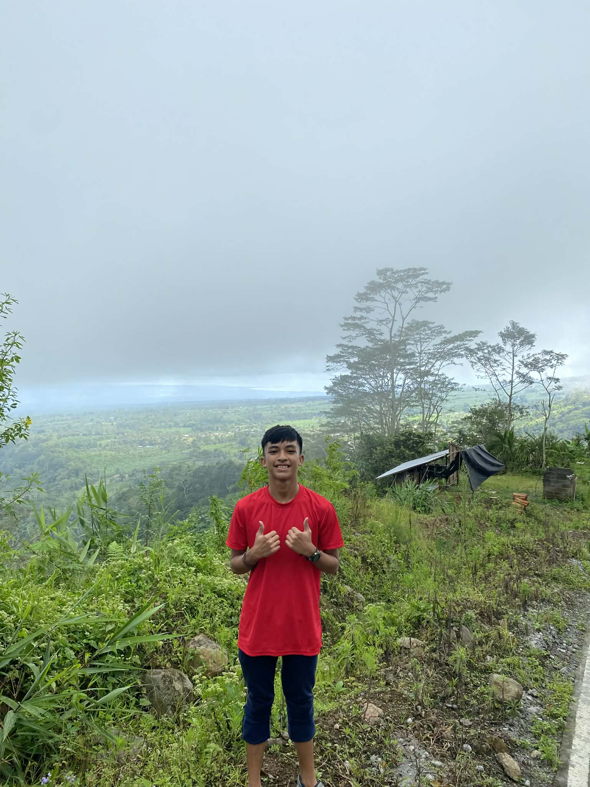
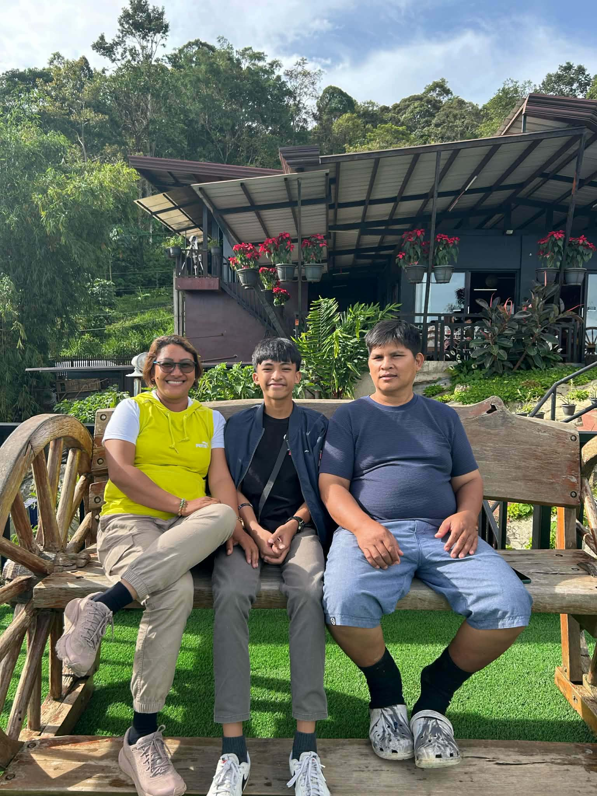
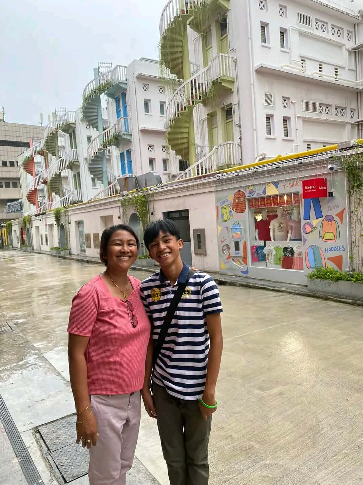
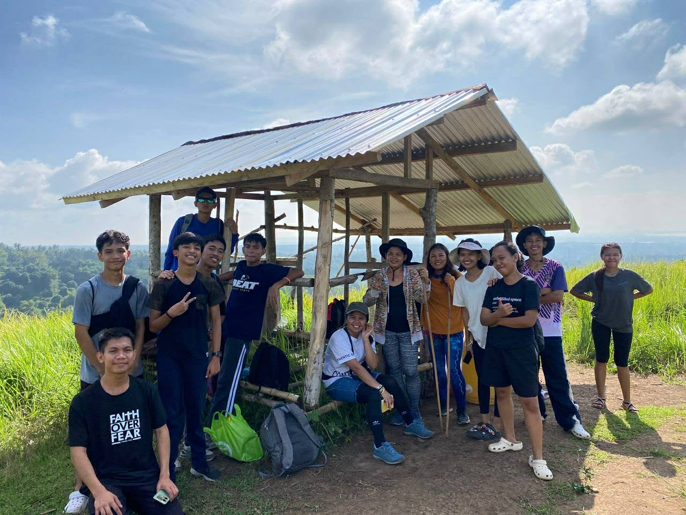
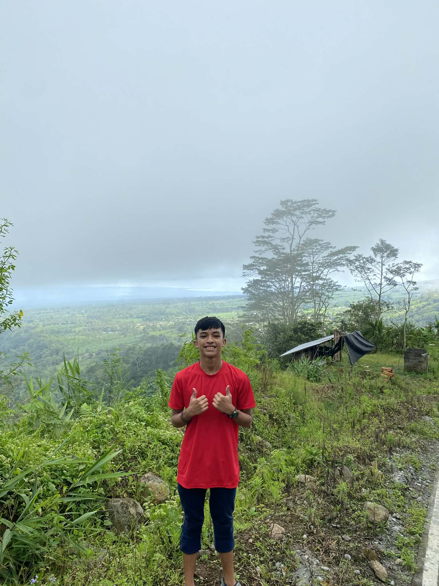
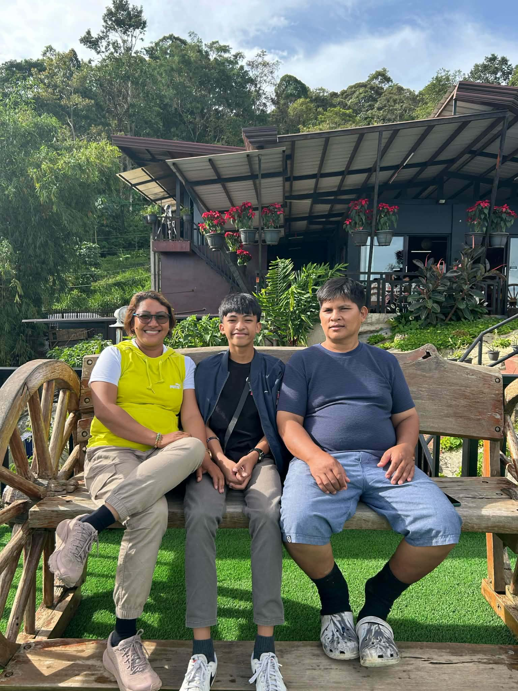
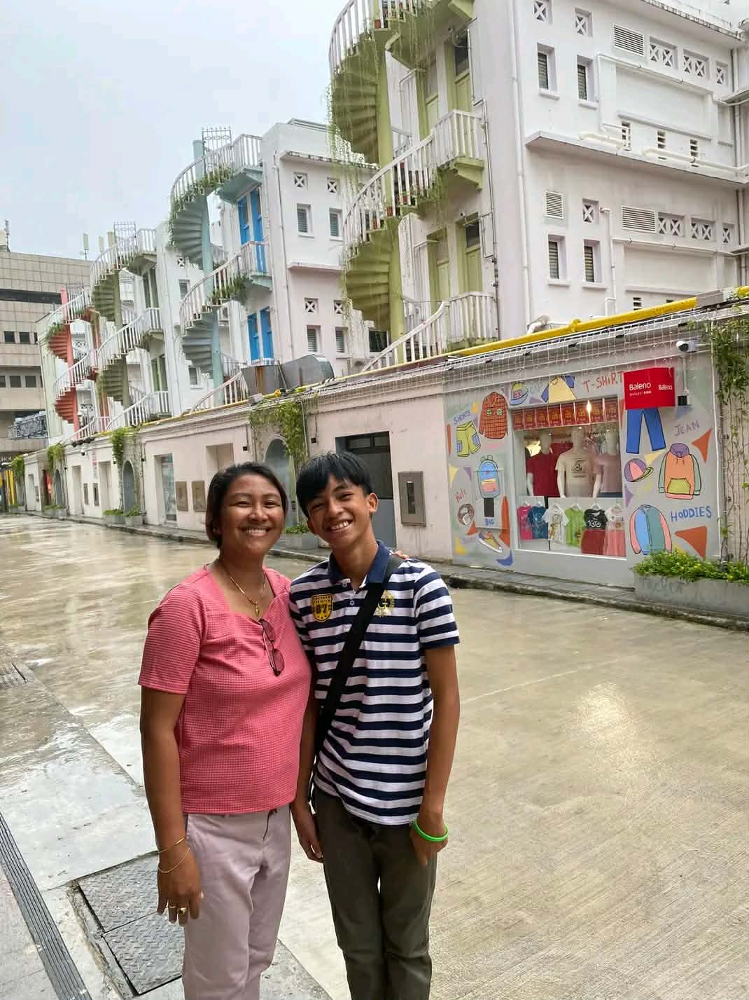
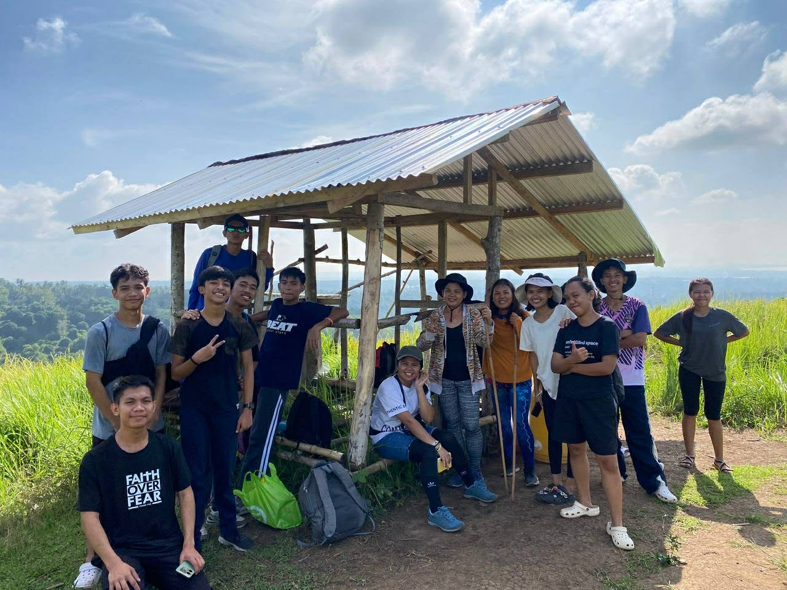

Hello! My name is Kent Vince S. Masanegra, a Grade 11 student who is passionate about learning and improving my skills.
I am interested in using technology for schoolwork, communication, and creativity. Through ICT, I can easily research, create projects, and connect with others.
I am continuously learning how to use technology responsibly and wisely. My goal is to use digital tools to help me succeed in my studies and future career.
 








The pre-digital era was a time before modern technology when people used books, letters, radios, and telephones invented by Alexander Graham Bell...

In the 1980s, computers became popular in homes, schools, and offices through personal computers made by IBM and Apple, making work, study, and communication easier for many people.

In the Philippines, digital shifts transformed daily life, education, and business as people started using computers, the internet, and smartphones instead of relying on traditional tools.

The ICT boom marked rapid growth of computers, mobile phones, the internet, and social media, greatly improving communication, business, and education.

Defined by high‑speed internet, smartphones, cloud computing, and social platforms allowing instant communication and digital services.
My advocacy focuses on preventing cyberbullying and promoting kindness online... #StopCyberBullying #ThinkBeforeYouType #ClickWithCare
The ICT era that impacted me the most is the modern digital era because it allows me to learn anytime and anywhere...